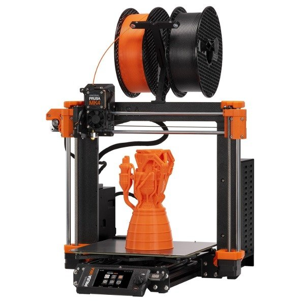
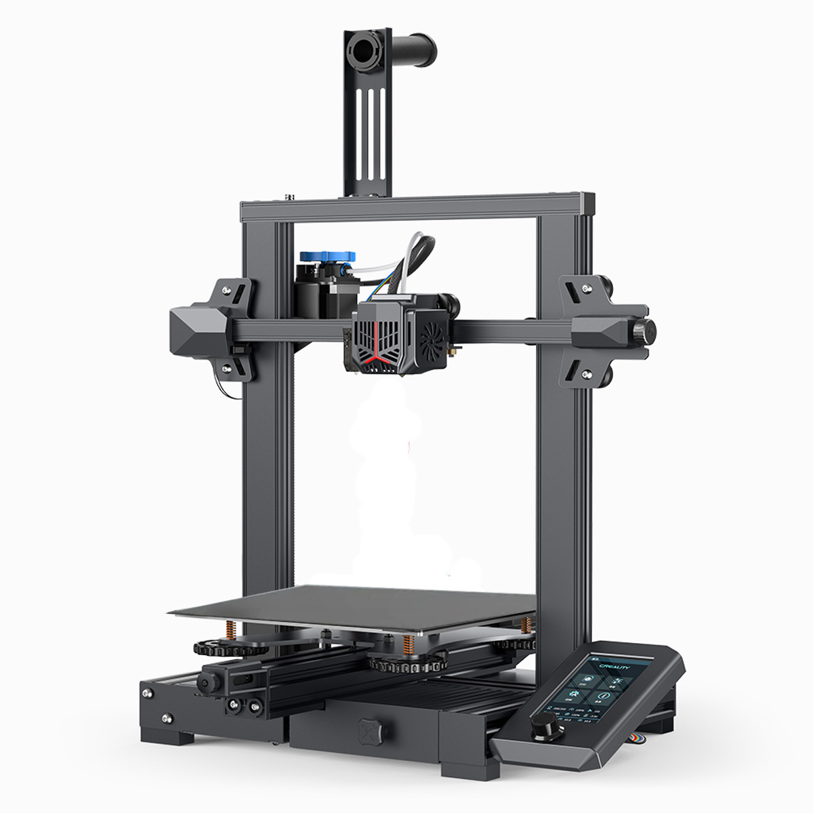
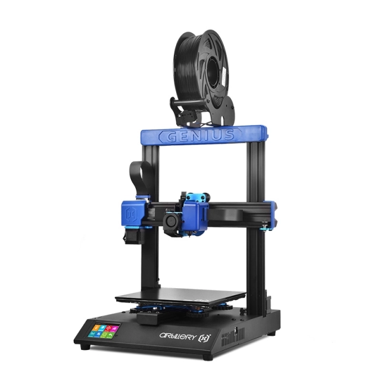

Impresoras
Prusa
Prusa Research, con sede en Chequia, produce impresoras 3D FDM de diseño abierto y enfoque técnico. Modelos como la Prusa i3 MK4 incluyen autocalibración, componentes modulares y compatibilidad con diversos materiales. Son utilizadas tanto para prototipado avanzado como para fabricación de piezas funcionales.
Creality
La marca china Creality se especializa en impresoras 3D FDM económicas y modulares, como la Ender 3. Estos equipos requieren configuraciones iniciales y ajustes frecuentes, lo que los hace adecuados para usuarios que buscan personalización y flexibilidad a bajo costo. Suele elegirse el modelo Ender 3 debido a esto mismo.
Artillery
Artillery fabrica impresoras 3D FDM que combinan extrusión directa y plataformas de calentamiento rápido. Modelos como la Sidewinder X2 permiten impresiones grandes y detalladas, con un diseño orientado a reducir ruido, adaptándose a entornos domésticos o talleres pequeños
Servicios
Impresión FDM
La impresión 3D FDM (Modelado por Deposición Fundida) es un método que construye objetos capa por capa fundiendo filamento plástico y depositándolo según un diseño 3D. Utiliza materiales como PLA, ABS y PETG, siendo ideal para prototipos funcionales y piezas mecánicas. Es la tecnología más común en impresoras domésticas por su bajo costo y facilidad de uso.
Impresión SLA
La impresión 3D SLA (Estereolitografía) utiliza un láser o proyector UV para solidificar resina líquida fotosensible capa por capa. Es conocida por su alta precisión y acabados más suaves, lo que la hace ideal para modelos detallados, odontología y joyería. Requiere posprocesamiento para limpiar y curar las piezas.
Modelado 3D
El modelado 3D es el proceso de crear representaciones digitales tridimensionales de objetos utilizando software especializado. Los modelos se componen de vértices, bordes y polígonos que definen su forma. Este método se emplea en campos como la animación, diseño industrial, arquitectura y videojuegos. Los modelos pueden exportarse para renders, simulaciones o impresión 3D.
Materiales
Filamento
El filamento es el material utilizado en la impresión FDM, generalmente en forma de bobinas. Los tipos más comunes son PLA, ABS, PETG, y TPU, cada uno con características específicas de resistencia, flexibilidad y facilidad de uso. Su elección depende de la aplicación y las propiedades requeridas, como durabilidad o flexibilidad.
Resina
La resina es un material líquido utilizado en la impresión 3D mediante tecnología SLA (Estereolitografía). Al ser expuesta a luz UV, la resina se solidifica capa por capa para formar objetos detallados. Existen diferentes tipos de resina, como resina estándar, resina flexible, resina duradera y resina dental, cada una adecuada para aplicaciones específicas que requieren precisión, flexibilidad o resistencia.